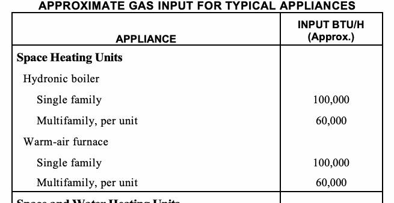
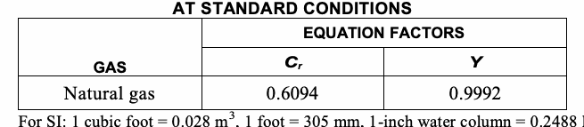
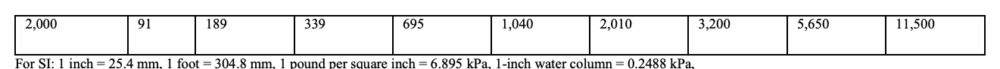
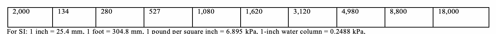
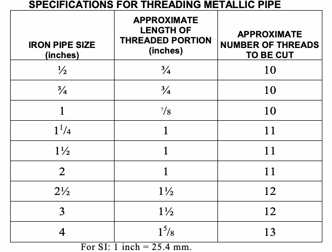
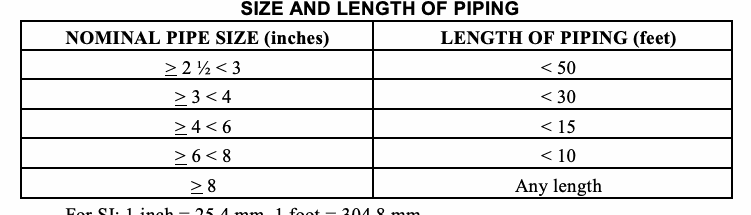
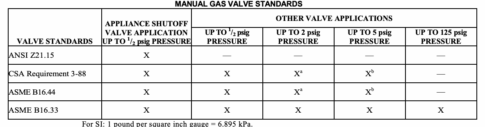
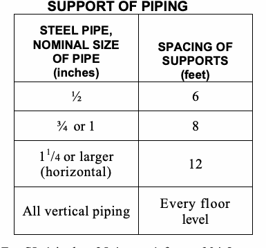

This chapter shall govern the design, installation, modification and maintenance of fuel-gas piping systems. The scope covered by this chapter includes piping systems from the point of delivery to the connections with the appliances and includes the design, materials, components, fabrication, assembly, installation, testing, inspection, operation and maintenance of such piping systems.
Service piping includes the fuel-gas piping up to the point of delivery. Meters and service piping shall comply with the requirements of Appendix E of this code. In addition, service piping located within buildings shall be designed and installed in accordance with the structural integrity, firestopping, and fire protection provisions of the New York City Building Code.
In modifying or adding to existing piping systems, sizes shall be maintained in accordance with this chapter.
Where an additional appliance is to be served, the existing piping shall be checked to determine if it has adequate capacity for all appliances served. If inadequate, the existing system shall be enlarged as required or separate piping of adequate capacity shall be provided.
All piping installed in new construction and all new piping installed in existing buildings, whether or not the piping is intended to be enclosed when construction is completed, shall be identified by a yellow label marked “Gas” in black letters. Where the installation requires a gas test such labeling shall be completed prior to such test. Labels shall be provided in accordance with ASME A13.1 and the marking shall be spaced at intervals not exceeding 5 feet (1524 mm). The marking shall not be required on pipe located in the same room as the appliance served.
Where two or more meters are installed on the same premises but supply separate consumers, the piping systems shall not be interconnected on the outlet side of the meters.
Piping from multiple meter installations shall be marked with an approved permanent identification by the installer so that the piping system supplied by each meter is readily identifiable.
All pipe utilized for the installation, extension and alteration of any piping system shall be sized to supply the full number of outlets for the intended purpose and shall be sized in accordance with Section 402.
Piping systems shall be of such size and so installed as to provide a supply of gas sufficient to meet the maximum demand and supply gas to each appliance inlet at not less than the minimum supply pressure required by the appliance.
The volume of gas to be provided, in cubic feet per hour, shall be determined directly from the manufacturer’s input ratings of the appliance served. Where an input rating is not indicated, the gas supplier, appliance manufacturer or a qualified agency shall be contacted, or the rating from Table 402.2 shall be used for estimating the volume of gas to be supplied. The total connected hourly load shall be used as the basis for pipe sizing, appliances that all equipment could be operating at full capacity simultaneously. Where a diversity of load can be established, pipe sizing shall be permitted to be based on such loads.
Space and Water Heating Units Hydronic boiler
Single family 120,000 Multifamily, per unit 75,000
Water Heating Appliances
Water heater, automatic instantaneous
Capacity at 2 gal./minute 142,800
Capacity at 4 gal./minute 285,000
Capacity at 6 gal./minute 428,400
Water heater, automatic storage, 30- to 40-gal. tank 35,000
Water heater, automatic storage, 50-gal. tank 50,000 Water heater, domestic, circulating or side-arm 35,000
Cooking Appliances
Built-in oven or broiler unit, domestic 25,000
Built-in top unit, domestic 40,000 Range, free-standing, domestic 65,000
Other Appliances
Barbecue 40,000
Clothes dryer, Type 1 (domestic) 35,000
Gas fireplace, direct-vent 40,000
Gas light 2,500
Gas log 80,000
Refrigerator 3,000
For SI: British thermal unit per hour = 0.293 W, 1 gallon = 3.875 L, 1 gallon per minute = 3.785 L/m

Gas piping shall be sized in accordance with one of the following:
1. Pipe sizing tables or sizing equations in accordance with Section 402.4.
2. The sizing tables included in a listed piping system’s manufacturer’s installation instructions.
3. Other approved engineering methods.
4. Individual outlets to gas ranges shall not be less than ¾ inches (19 mm) NPS.
Where Tables 402.4(1) through 402.4(5) are used to size piping or tubing, the pipe length shall be determined in accordance with Section 402.4.1, 402.4.2 or 402.4.3. Where Equations 4-1 and 4-2 are used to size piping or tubing, the pipe or tubing shall have smooth inside walls and the pipe length shall be determined in accordance with Section 402.4.1, 402.4.2 or 402.4.3.
1. Low-pressure gas equation (Less than 1½ pounds per square inch (psi) (10.3 kPa)):
D = ________Q0.381_______ (Equation 4-1) 19.17 {(∆H)/(Cr × L)}0.206
2. High-pressure gas equation (1½ psi (10.3 kPa) and above):
D = ________Q0.381__________________ (Equation 4-2) 18.93 {(P12 - P22) × Y / Cr × L}0.206
where:
D = Inside diameter of pipe, inches (mm).
Q = Input rate appliance(s), cubic feet per hour at 60°F (16°C) and 30-inch mercury column P1 = Upstream pressure, psia (P1 + 14.7) P2 = Downstream pressure, psia (P2 + 14.7)
L = Equivalent length of pipe, feet ∆H = Pressure drop, inch water column (27.7 inch water column = 1 psi)

| Gas | Natural | ||||||||||||||
|---|---|---|---|---|---|---|---|---|---|---|---|---|---|---|---|
| Inlet Pressure | Less than 2 psi | ||||||||||||||
| Pressure Drop | 0.3 in. w.c. | ||||||||||||||
| Specific Gravity | 0.60 | ||||||||||||||
| PIPE SIZE (inch) | |||||||||||||||
| Nominal | 1/2 | 3/4 | 1 | 11/4 | 11/2 | 2 | 21/2 | 3 | 4 | 5 | 6 | 8 | 10 | 12 | |
| Actual ID | 0.622 | 0.824 | 1.049 | 1.380 | 1.610 | 2.067 | 2.469 | 3.068 | 4.026 | 5.047 | 6.065 | 7.981 | 10.020 | 11.938 | |
| Length (ft) | Capacity in Cubic Feet of Gas Per Hour | ||||||||||||||
| 10 | 131 | 273 | 514 | 1,060 | 1,580 | 3,050 | 4,860 | 8,580 | 17,500 | 31,700 | 51,300 | 105,000 | 191,000 | 303,000 | |
| 20 | 90 | 188 | 353 | 726 | 1,090 | 2,090 | 3,340 | 5,900 | 12,000 | 21,800 | 35,300 | 72,400 | 132,000 | 208,000 | |
| 30 | 72 | 151 | 284 | 583 | 873 | 1,680 | 2,680 | 4,740 | 9,660 | 17,500 | 28,300 | 58,200 | 106,000 | 167,000 | |
| 40 | 62 | 129 | 243 | 499 | 747 | 1,440 | 2,290 | 4,050 | 8,270 | 15,000 | 24,200 | 49,800 | 90,400 | 143,000 | |
| 50 | 55 | 114 | 215 | 442 | 662 | 1,280 | 2,030 | 3,590 | 7,330 | 13,300 | 21,500 | 44,100 | 80,100 | 127,000 | |
| 60 | 50 | 104 | 195 | 400 | 600 | 1,160 | 1,840 | 3,260 | 6,640 | 12,000 | 19,500 | 40,000 | 72,600 | 115,000 | |
| 70 | 46 | 95 | 179 | 368 | 552 | 1,060 | 1,690 | 3,000 | 6,110 | 11,100 | 17,900 | 36,800 | 66,800 | 106,000 | |
| 80 | 42 | 89 | 167 | 343 | 514 | 989 | 1,580 | 2,790 | 5,680 | 10,300 | 16,700 | 34,200 | 62,100 | 98,400 | |
| 90 | 40 | 83 | 157 | 322 | 482 | 928 | 1,480 | 2,610 | 5,330 | 9,650 | 15,600 | 32,100 | 58,300 | 92,300 | |
| 100 | 38 | 79 | 148 | 304 | 455 | 877 | 1,400 | 2,470 | 5,040 | 9,110 | 14,800 | 30,300 | 55,100 | 87,200 | |
| 125 | 33 | 70 | 131 | 269 | 403 | 777 | 1,240 | 2,190 | 4,460 | 8,080 | 13,100 | 26,900 | 48,800 | 77,300 | |
| 150 | 30 | 63 | 119 | 244 | 366 | 704 | 1,120 | 1,980 | 4,050 | 7,320 | 11,900 | 24,300 | 44,200 | 70,000 | |
| 175 | 28 | 58 | 109 | 224 | 336 | 648 | 1,030 | 1,820 | 3,720 | 6,730 | 10,900 | 22,400 | 40,700 | 64,400 | |
| 200 | 26 | 54 | 102 | 209 | 313 | 602 | 960 | 1,700 | 3,460 | 6,260 | 10,100 | 20,800 | 37,900 | 59,900 | |
| 250 | 23 | 48 | 90 | 185 | 277 | 534 | 851 | 1,500 | 3,070 | 5,550 | 8,990 | 18,500 | 33,500 | 53,100 | |
| 300 | 21 | 43 | 82 | 168 | 251 | 484 | 771 | 1,360 | 2,780 | 5,030 | 8,150 | 16,700 | 30,400 | 48,100 | |
| 350 | 19 | 40 | 75 | 154 | 231 | 445 | 709 | 1,250 | 2,560 | 4,630 | 7,490 | 15,400 | 28,000 | 44,300 | |
| 400 | 18 | 37 | 70 | 143 | 215 | 414 | 660 | 1,170 | 2,380 | 4,310 | 6,970 | 14,300 | 26,000 | 41,200 | |
| 450 | 17 | 35 | 66 | 135 | 202 | 389 | 619 | 1,090 | 2,230 | 4,040 | 6,540 | 13,400 | 24,400 | 38,600 | |
| 500 | 16 | 33 | 62 | 127 | 191 | 367 | 585 | 1,030 | 2,110 | 3,820 | 6,180 | 12,700 | 23,100 | 36,500 | |
| 550 | 15 | 31 | 59 | 121 | 181 | 349 | 556 | 982 | 2,000 | 3,620 | 5,870 | 12,100 | 21,900 | 34,700 | |
| 600 | 14 | 30 | 56 | 115 | 173 | 333 | 530 | 937 | 1,910 | 3,460 | 5,600 | 11,500 | 20,900 | 33,100 | |
| 650 | 14 | 29 | 54 | 110 | 165 | 318 | 508 | 897 | 1,830 | 3,310 | 5,360 | 11,000 | 20,000 | 31,700 | |
| 700 | 13 | 27 | 52 | 106 | 159 | 306 | 488 | 862 | 1,760 | 3,180 | 5,150 | 10,600 | 19,200 | 30,400 | |
| 750 | 13 | 26 | 50 | 102 | 153 | 295 | 470 | 830 | 1,690 | 3,060 | 4,960 | 10,200 | 18,500 | 29,300 | |
| 800 | 12 | 26 | 48 | 99 | 148 | 285 | 454 | 802 | 1,640 | 2,960 | 4,790 | 9,840 | 17,900 | 28,300 | |
| 850 | 12 | 25 | 46 | 95 | 143 | 275 | 439 | 776 | 1,580 | 2,860 | 4,640 | 9,530 | 17,300 | 27,400 | |
| 900 | 11 | 24 | 45 | 93 | 139 | 267 | 426 | 752 | 1,530 | 2,780 | 4,500 | 9,240 | 16,800 | 26,600 | |
| 950 | 11 | 23 | 44 | 90 | 135 | 259 | 413 | 731 | 1,490 | 2,700 | 4,370 | 8,970 | 16,300 | 25,800 | |
| 1,000 | 11 | 23 | 43 | 87 | 131 | 252 | 402 | 711 | 1,450 | 2,620 | 4,250 | 8,720 | 15,800 | 25,100 | |
| 1,100 | 10 | 21 | 40 | 83 | 124 | 240 | 382 | 675 | 1,380 | 2,490 | 4,030 | 8,290 | 15,100 | 23,800 | |
| 1,200 | NA | 20 | 39 | 79 | 119 | 229 | 364 | 644 | 1,310 | 2,380 | 3,850 | 7,910 | 14,400 | 22,700 | |
| 1,300 | NA | 20 | 37 | 76 | 114 | 219 | 349 | 617 | 1,260 | 2,280 | 3,680 | 7,570 | 13,700 | 21,800 | |
| 1,400 | NA | 19 | 35 | 73 | 109 | 210 | 335 | 592 | 1,210 | 2,190 | 3,540 | 7,270 | 13,200 | 20,900 | |
| 1,500 | NA | 18 | 34 | 70 | 105 | 203 | 323 | 571 | 1,160 | 2,110 | 3,410 | 7,010 | 12,700 | 20,100 | |
| 1,600 | NA | 18 | 33 | 68 | 102 | 196 | 312 | 551 | 1,120 | 2,030 | 3,290 | 6,770 | 12,300 | 19,500 | |
| 1,700 | NA | 17 | 32 | 66 | 98 | 189 | 302 | 533 | 1,090 | 1,970 | 3,190 | 6,550 | 11,900 | 18,800 | |
| 1,800 | NA | 16 | 31 | 64 | 95 | 184 | 293 | 517 | 1,050 | 1,910 | 3,090 | 6,350 | 11,500 | 18,300 | |
| 1,900 | NA | 16 | 30 | 62 | 93 | 178 | 284 | 502 | 1,020 | 1,850 | 3,000 | 6,170 | 11,200 | 17,700 | |
| 2,000 | NA | 16 | 29 | 60 | 90 | 173 | 276 | 488 | 1,000 | 1,800 | 2,920 | 6,000 | 10,900 | 17,200 |
| Gas | Natural | ||||||||||||||
|---|---|---|---|---|---|---|---|---|---|---|---|---|---|---|---|
| Inlet Pressure | Less than 2 psi | ||||||||||||||
| Pressure Drop | 0.5 inch w.c. | ||||||||||||||
| Specific Gravity | 0.60 | ||||||||||||||
| PIPE SIZE (inch) | |||||||||||||||
| Nominal | 1/2 | 3/4 | 1 | 11/4 | 11/2 | 2 | 21/2 | 3 | 4 | 5 | 6 | 8 | 10 | 12 | |
| Actual ID | 0.622 | 0.824 | 1.049 | 1.380 | 1.610 | 2.067 | 2.469 | 3.068 | 4.026 | 5.047 | 6.065 | 7.981 | 10.020 | 11.938 | |
| Length (ft) | Capacity in Cubic Feet of Gas Per Hour | ||||||||||||||
| 10 | 172 | 360 | 678 | 1,390 | 2,090 | 4,020 | 6,400 | 11,300 | 23,100 | 41,800 | 67,600 | 139,000 | 252,000 | 399,000 | |
| 20 | 118 | 247 | 466 | 957 | 1,430 | 2,760 | 4,400 | 7,780 | 15,900 | 28,700 | 46,500 | 95,500 | 173,000 | 275,000 | |
| 30 | 95 | 199 | 374 | 768 | 1,150 | 2,220 | 3,530 | 6,250 | 12,700 | 23,000 | 37,300 | 76,700 | 139,000 | 220,000 | |
| 40 | 81 | 170 | 320 | 657 | 985 | 1,900 | 3,020 | 5,350 | 10,900 | 19,700 | 31,900 | 65,600 | 119,000 | 189,000 | |
| 50 | 72 | 151 | 284 | 583 | 873 | 1,680 | 2,680 | 4,740 | 9,660 | 17,500 | 28,300 | 58,200 | 106,000 | 167,000 | |
| 60 | 65 | 137 | 257 | 528 | 791 | 1,520 | 2,430 | 4,290 | 8,760 | 15,800 | 25,600 | 52,700 | 95,700 | 152,000 | |
| 70 | 60 | 126 | 237 | 486 | 728 | 1,400 | 2,230 | 3,950 | 8,050 | 14,600 | 23,600 | 48,500 | 88,100 | 139,000 | |
| 80 | 56 | 117 | 220 | 452 | 677 | 1,300 | 2,080 | 3,670 | 7,490 | 13,600 | 22,000 | 45,100 | 81,900 | 130,000 | |
| 90 | 52 | 110 | 207 | 424 | 635 | 1,220 | 1,950 | 3,450 | 7,030 | 12,700 | 20,600 | 42,300 | 76,900 | 122,000 | |
| 100 | 50 | 104 | 195 | 400 | 600 | 1,160 | 1,840 | 3,260 | 6,640 | 12,000 | 19,500 | 40,000 | 72,600 | 115,000 | |
| 125 | 44 | 92 | 173 | 355 | 532 | 1,020 | 1,630 | 2,890 | 5,890 | 10,600 | 17,200 | 35,400 | 64,300 | 102,000 | |
| 150 | 40 | 83 | 157 | 322 | 482 | 928 | 1,480 | 2,610 | 5,330 | 9,650 | 15,600 | 32,100 | 58,300 | 92,300 | |
| 175 | 37 | 77 | 144 | 296 | 443 | 854 | 1,360 | 2,410 | 4,910 | 8,880 | 14,400 | 29,500 | 53,600 | 84,900 | |
| 200 | 34 | 71 | 134 | 275 | 412 | 794 | 1,270 | 2,240 | 4,560 | 8,260 | 13,400 | 27,500 | 49,900 | 79,000 | |
| 250 | 30 | 63 | 119 | 244 | 366 | 704 | 1,120 | 1,980 | 4,050 | 7,320 | 11,900 | 24,300 | 44,200 | 70,000 | |
| 300 | 27 | 57 | 108 | 221 | 331 | 638 | 1,020 | 1,800 | 3,670 | 6,630 | 10,700 | 22,100 | 40,100 | 63,400 | |
| 350 | 25 | 53 | 99 | 203 | 305 | 587 | 935 | 1,650 | 3,370 | 6,100 | 9,880 | 20,300 | 36,900 | 58,400 | |
| 400 | 23 | 49 | 92 | 189 | 283 | 546 | 870 | 1,540 | 3,140 | 5,680 | 9,190 | 18,900 | 34,300 | 54,300 | |
| 450 | 22 | 46 | 86 | 177 | 266 | 512 | 816 | 1,440 | 2,940 | 5,330 | 8,620 | 17,700 | 32,200 | 50,900 | |
| 500 | 21 | 43 | 82 | 168 | 251 | 484 | 771 | 1,360 | 2,780 | 5,030 | 8,150 | 16,700 | 30,400 | 48,100 | |
| 550 | 20 | 41 | 78 | 159 | 239 | 459 | 732 | 1,290 | 2,640 | 4,780 | 7,740 | 15,900 | 28,900 | 45,700 | |
| 600 | 19 | 39 | 74 | 152 | 228 | 438 | 699 | 1,240 | 2,520 | 4,560 | 7,380 | 15,200 | 27,500 | 43,600 | |
| 650 | 18 | 38 | 71 | 145 | 218 | 420 | 669 | 1,180 | 2,410 | 4,360 | 7,070 | 14,500 | 26,400 | 41,800 | |
| 700 | 17 | 36 | 68 | 140 | 209 | 403 | 643 | 1,140 | 2,320 | 4,190 | 6,790 | 14,000 | 25,300 | 40,100 | |
| 750 | 17 | 35 | 66 | 135 | 202 | 389 | 619 | 1,090 | 2,230 | 4,040 | 6,540 | 13,400 | 24,400 | 38,600 | |
| 800 | 16 | 34 | 63 | 130 | 195 | 375 | 598 | 1,060 | 2,160 | 3,900 | 6,320 | 13,000 | 23,600 | 37,300 | |
| 850 | 16 | 33 | 61 | 126 | 189 | 363 | 579 | 1,020 | 2,090 | 3,780 | 6,110 | 12,600 | 22,800 | 36,100 | |
| 900 | 15 | 32 | 59 | 122 | 183 | 352 | 561 | 992 | 2,020 | 3,660 | 5,930 | 12,200 | 22,100 | 35,000 | |
| 950 | 15 | 31 | 58 | 118 | 178 | 342 | 545 | 963 | 1,960 | 3,550 | 5,760 | 11,800 | 21,500 | 34,000 | |
| 1,000 | 14 | 30 | 56 | 115 | 173 | 333 | 530 | 937 | 1,910 | 3,460 | 5,600 | 11,500 | 20,900 | 33,100 | |
| 1,100 | 14 | 28 | 53 | 109 | 164 | 316 | 503 | 890 | 1,810 | 3,280 | 5,320 | 10,900 | 19,800 | 31,400 | |
| 1,200 | 13 | 27 | 51 | 104 | 156 | 301 | 480 | 849 | 1,730 | 3,130 | 5,070 | 10,400 | 18,900 | 30,000 | |
| 1,300 | 12 | 26 | 49 | 100 | 150 | 289 | 460 | 813 | 1,660 | 3,000 | 4,860 | 9,980 | 18,100 | 28,700 | |
| 1,400 | 12 | 25 | 47 | 96 | 144 | 277 | 442 | 781 | 1,590 | 2,880 | 4,670 | 9,590 | 17,400 | 27,600 | |
| 1,500 | 11 | 24 | 45 | 93 | 139 | 267 | 426 | 752 | 1,530 | 2,780 | 4,500 | 9,240 | 16,800 | 26,600 | |
| 1,600 | 11 | 23 | 44 | 89 | 134 | 258 | 411 | 727 | 1,480 | 2,680 | 4,340 | 8,920 | 16,200 | 25,600 | |
| 1,700 | 11 | 22 | 42 | 86 | 130 | 250 | 398 | 703 | 1,430 | 2,590 | 4,200 | 8,630 | 15,700 | 24,800 | |
| 1,800 | 10 | 22 | 41 | 84 | 126 | 242 | 386 | 682 | 1,390 | 2,520 | 4,070 | 8,370 | 15,200 | 24,100 | |
| 1,900 | 10 | 21 | 40 | 81 | 122 | 235 | 375 | 662 | 1,350 | 2,440 | 3,960 | 8,130 | 14,800 | 23,400 | |
| 2,000 | NA | 20 | 39 | 79 | 119 | 229 | 364 | 644 | 1,310 | 2,380 | 3,850 | 7,910 | 14,400 | 22,700 |
| Gas | Natural | |||||||||
|---|---|---|---|---|---|---|---|---|---|---|
| Inlet Pressure | 2.0 psi | |||||||||
| Pressure Drop | 1.0 psi | |||||||||
| Specific Gravity | 0.60 | |||||||||
| PIPE SIZE (inch) | ||||||||||
| Nominal | ½ | 3/4 | 1 | 1¼ | 1½ | 2 | 2½ | 3 | 4 | |
| Actual ID | 0.622 | 0.824 | 1.049 | 1.380 | 1.610 | 2.067 | 2.469 | 3.068 | 4.026 | |
| Length (ft) | Capacity in Cubic Feet of Gas Per Hour | |||||||||
| 10 | 1,510 | 3,040 | 5,560 | 11,400 | 17,100 | 32,900 | 52,500 | 92,800 | 189,000 | |
| 20 | 1,070 | 2,150 | 3,930 | 8,070 | 12,100 | 23,300 | 37,100 | 65,600 | 134,000 | |
| 30 | 869 | 1,760 | 3,210 | 6,590 | 9,880 | 19,000 | 30,300 | 53,600 | 109,000 | |
| 40 | 753 | 1,520 | 2,780 | 5,710 | 8,550 | 16,500 | 26,300 | 46,400 | 94,700 | |
| 50 | 673 | 1,360 | 2,490 | 5,110 | 7,650 | 14,700 | 23,500 | 41,500 | 84,700 | |
| 60 | 615 | 1,240 | 2,270 | 4,660 | 6,980 | 13,500 | 21,400 | 37,900 | 77,300 | |
| 70 | 569 | 1,150 | 2,100 | 4,320 | 6,470 | 12,500 | 19,900 | 35,100 | 71,600 | |
| 80 | 532 | 1,080 | 1,970 | 4,040 | 6,050 | 11,700 | 18,600 | 32,800 | 67,000 | |
| 90 | 502 | 1,010 | 1,850 | 3,810 | 5,700 | 11,000 | 17,500 | 30,900 | 63,100 | |
| 100 | 462 | 934 | 1,710 | 3,510 | 5,260 | 10,100 | 16,100 | 28,500 | 58,200 | |
| 125 | 414 | 836 | 1,530 | 3,140 | 4,700 | 9,060 | 14,400 | 25,500 | 52,100 | |
| 150 | 372 | 751 | 1,370 | 2,820 | 4,220 | 8,130 | 13,000 | 22,900 | 46,700 | |
| 175 | 344 | 695 | 1,270 | 2,601 | 3,910 | 7,530 | 12,000 | 21,200 | 43,300 | |
| 200 | 318 | 642 | 1,170 | 2,410 | 3,610 | 6,960 | 11,100 | 19,600 | 40,000 | |
| 250 | 279 | 583 | 1,040 | 2,140 | 3,210 | 6,180 | 9,850 | 17,400 | 35,500 | |
| 300 | 253 | 528 | 945 | 1,940 | 2,910 | 5,600 | 8,920 | 15,800 | 32,200 | |
| 350 | 232 | 486 | 869 | 1,790 | 2,670 | 5,150 | 8,210 | 14,500 | 29,600 | |
| 400 | 216 | 452 | 809 | 1,660 | 2,490 | 4,790 | 7,640 | 13,500 | 27,500 | |
| 450 | 203 | 424 | 759 | 1,560 | 2,330 | 4,500 | 7,170 | 12,700 | 25,800 | |
| 500 | 192 | 401 | 717 | 1,470 | 2,210 | 4,250 | 6,770 | 12,000 | 24,400 | |
| 550 | 182 | 381 | 681 | 1,400 | 2,090 | 4,030 | 6,430 | 11,400 | 23,200 | |
| 600 | 174 | 363 | 650 | 1,330 | 2,000 | 3,850 | 6,130 | 10,800 | 22,100 | |
| 650 | 166 | 348 | 622 | 1,280 | 1,910 | 3,680 | 5,870 | 10,400 | 21,200 | |
| 700 | 160 | 334 | 598 | 1,230 | 1,840 | 3,540 | 5,640 | 9,970 | 20,300 | |
| 750 | 154 | 322 | 576 | 1,180 | 1,770 | 3,410 | 5,440 | 9,610 | 19,600 | |
| 800 | 149 | 311 | 556 | 1,140 | 1,710 | 3,290 | 5,250 | 9,280 | 18,900 | |
| 850 | 144 | 301 | 538 | 1,100 | 1,650 | 3,190 | 5,080 | 8,980 | 18,300 | |
| 900 | 139 | 292 | 522 | 1,070 | 1,600 | 3,090 | 4,930 | 8,710 | 17,800 | |
| 950 | 135 | 283 | 507 | 1,040 | 1,560 | 3,000 | 4,780 | 8,460 | 17,200 | |
| 1,000 | 132 | 275 | 493 | 1,010 | 1,520 | 2,920 | 4,650 | 8,220 | 16,800 | |
| 1,100 | 125 | 262 | 468 | 960 | 1,440 | 2,770 | 4,420 | 7,810 | 15,900 | |
| 1,200 | 119 | 250 | 446 | 917 | 1,370 | 2,640 | 4,220 | 7,450 | 15,200 | |
| 1,300 | 114 | 239 | 427 | 878 | 1,320 | 2,530 | 4,040 | 7,140 | 14,600 | |
| 1,400 | 110 | 230 | 411 | 843 | 1,260 | 2,430 | 3,880 | 6,860 | 14,000 | |
| 1,500 | 106 | 221 | 396 | 812 | 1,220 | 2,340 | 3,740 | 6,600 | 13,500 | |
| 1,600 | 102 | 214 | 382 | 784 | 1,180 | 2,260 | 3,610 | 6,380 | 13,000 | |
| 1,700 | 99 | 207 | 370 | 759 | 1,140 | 2,190 | 3,490 | 6,170 | 12,600 | |
| 1,800 | 96 | 200 | 358 | 736 | 1,100 | 2,120 | 3,390 | 5,980 | 12,200 | |
| 1,900 | 93 | 195 | 348 | 715 | 1,070 | 2,060 | 3,290 | 5,810 | 11,900 |
| Gas | Natural | |||||||||
|---|---|---|---|---|---|---|---|---|---|---|
| Inlet Pressure | 3.0 psi | |||||||||
| Pressure Drop | 2.0 psi | |||||||||
| Specific Gravity | 0.60 | |||||||||
| PIPE SIZE (inch) | ||||||||||
| Nominal | 1/2 | 3/4 | 1 | 11/4 | 11/2 | 2 | 21/2 | 3 | 4 | |
| Actual ID | 0.622 | 0.824 | 1.049 | 1.380 | 1.610 | 2.067 | 2.469 | 3.068 | 4.026 | |
| Length (ft) | Capacity in Cubic Feet of Gas Per Hour | |||||||||
| 10 | 2,350 | 4,920 | 9,270 | 19,000 | 28,500 | 54,900 | 87,500 | 155,000 | 316,000 | |
| 20 | 1,620 | 3,380 | 6,370 | 13,100 | 19,600 | 37,700 | 60,100 | 106,000 | 217,000 | |
| 30 | 1,300 | 2,720 | 5,110 | 10,500 | 15,700 | 30,300 | 48,300 | 85,400 | 174,000 | |
| 40 | 1,110 | 2,320 | 4,380 | 8,990 | 13,500 | 25,900 | 41,300 | 73,100 | 149,000 | |
| 50 | 985 | 2,060 | 3,880 | 7,970 | 11,900 | 23,000 | 36,600 | 64,800 | 132,000 | |
| 60 | 892 | 1,870 | 3,520 | 7,220 | 10,800 | 20,800 | 33,200 | 58,700 | 120,000 | |
| 70 | 821 | 1,720 | 3,230 | 6,640 | 9,950 | 19,200 | 30,500 | 54,000 | 110,000 | |
| 80 | 764 | 1,600 | 3,010 | 6,180 | 9,260 | 17,800 | 28,400 | 50,200 | 102,000 | |
| 90 | 717 | 1,500 | 2,820 | 5,800 | 8,680 | 16,700 | 26,700 | 47,100 | 96,100 | |
| 100 | 677 | 1,420 | 2,670 | 5,470 | 8,200 | 15,800 | 25,200 | 44,500 | 90,800 | |
| 125 | 600 | 1,250 | 2,360 | 4,850 | 7,270 | 14,000 | 22,300 | 39,500 | 80,500 | |
| 150 | 544 | 1,140 | 2,140 | 4,400 | 6,590 | 12,700 | 20,200 | 35,700 | 72,900 | |
| 175 | 500 | 1,050 | 1,970 | 4,040 | 6,060 | 11,700 | 18,600 | 32,900 | 67,100 | |
| 200 | 465 | 973 | 1,830 | 3,760 | 5,640 | 10,900 | 17,300 | 30,600 | 62,400 | |
| 250 | 412 | 862 | 1,620 | 3,330 | 5,000 | 9,620 | 15,300 | 27,100 | 55,300 | |
| 300 | 374 | 781 | 1,470 | 3,020 | 4,530 | 8,720 | 13,900 | 24,600 | 50,100 | |
| 350 | 344 | 719 | 1,350 | 2,780 | 4,170 | 8,020 | 12,800 | 22,600 | 46,100 | |
| 400 | 320 | 669 | 1,260 | 2,590 | 3,870 | 7,460 | 11,900 | 21,000 | 42,900 | |
| 450 | 300 | 627 | 1,180 | 2,430 | 3,640 | 7,000 | 11,200 | 19,700 | 40,200 | |
| 500 | 283 | 593 | 1,120 | 2,290 | 3,430 | 6,610 | 10,500 | 18,600 | 38,000 | |
| 550 | 269 | 563 | 1,060 | 2,180 | 3,260 | 6,280 | 10,000 | 17,700 | 36,100 | |
| 600 | 257 | 537 | 1,010 | 2,080 | 3,110 | 5,990 | 9,550 | 16,900 | 34,400 | |
| 650 | 246 | 514 | 969 | 1,990 | 2,980 | 5,740 | 9,150 | 16,200 | 33,000 | |
| 700 | 236 | 494 | 931 | 1,910 | 2,860 | 5,510 | 8,790 | 15,500 | 31,700 | |
| 750 | 228 | 476 | 897 | 1,840 | 2,760 | 5,310 | 8,470 | 15,000 | 30,500 | |
| 800 | 220 | 460 | 866 | 1,780 | 2,660 | 5,130 | 8,180 | 14,500 | 29,500 | |
| 850 | 213 | 445 | 838 | 1,720 | 2,580 | 4,960 | 7,910 | 14,000 | 28,500 | |
| 900 | 206 | 431 | 812 | 1,670 | 2,500 | 4,810 | 7,670 | 13,600 | 27,700 | |
| 950 | 200 | 419 | 789 | 1,620 | 2,430 | 4,670 | 7,450 | 13,200 | 26,900 | |
| 1,000 | 195 | 407 | 767 | 1,580 | 2,360 | 4,550 | 7,240 | 12,800 | 26,100 | |
| 1,100 | 185 | 387 | 729 | 1,500 | 2,240 | 4,320 | 6,890 | 12,200 | 24,800 | |
| 1,200 | 177 | 369 | 695 | 1,430 | 2,140 | 4,120 | 6,570 | 11,600 | 23,700 | |
| 1,300 | 169 | 353 | 666 | 1,370 | 2,050 | 3,940 | 6,290 | 11,100 | 22,700 | |
| 1,400 | 162 | 340 | 640 | 1,310 | 1,970 | 3,790 | 6,040 | 10,700 | 21,800 | |
| 1,500 | 156 | 327 | 616 | 1,270 | 1,900 | 3,650 | 5,820 | 10,300 | 21,000 | |
| 1,600 | 151 | 316 | 595 | 1,220 | 1,830 | 3,530 | 5,620 | 10,000 | 20,300 | |
| 1,700 | 146 | 306 | 576 | 1,180 | 1,770 | 3,410 | 5,440 | 9,610 | 19,600 | |
| 1,800 | 142 | 296 | 558 | 1,150 | 1,720 | 3,310 | 5,270 | 9,320 | 19,000 | |
| 1,900 | 138 | 288 | 542 | 1,110 | 1,670 | 3,210 | 5,120 | 9,050 | 18,400 |
| Gas | Natural | |||||||||
|---|---|---|---|---|---|---|---|---|---|---|
| Inlet Pressure | 5.0 psi | |||||||||
| Pressure Drop | 3.5 psi | |||||||||
| Specific Gravity | 0.60 | |||||||||
| PIPE SIZE (inch) | ||||||||||
| Nominal | 1/2 | 3/4 | 1 | 11/4 | 11/2 | 2 | 21/2 | 3 | 4 | |
| Actual ID | 0.622 | 0.824 | 1.049 | 1.380 | 1.610 | 2.067 | 2.469 | 3.068 | 4.026 | |
| Length (ft) | Capacity in Cubic Feet of Gas Per Hour | |||||||||
| 10 | 3,190 | 6,430 | 11,800 | 24,200 | 36,200 | 69,700 | 111,000 | 196,000 | 401,000 | |
| 20 | 2,250 | 4,550 | 8,320 | 17,100 | 25,600 | 49,300 | 78,600 | 139,000 | 283,000 | |
| 30 | 1,840 | 3,720 | 6,790 | 14,000 | 20,900 | 40,300 | 64,200 | 113,000 | 231,000 | |
| 40 | 1,590 | 3,220 | 5,880 | 12,100 | 18,100 | 34,900 | 55,600 | 98,200 | 200,000 | |
| 50 | 1,430 | 2,880 | 5,260 | 10,800 | 16,200 | 31,200 | 49,700 | 87,900 | 179,000 | |
| 60 | 1,300 | 2,630 | 4,800 | 9,860 | 14,800 | 28,500 | 45,400 | 80,200 | 164,000 | |
| 70 | 1,200 | 2,430 | 4,450 | 9,130 | 13,700 | 26,400 | 42,000 | 74,300 | 151,000 | |
| 80 | 1,150 | 2,330 | 4,260 | 8,540 | 12,800 | 24,700 | 39,300 | 69,500 | 142,000 | |
| 90 | 1,060 | 2,150 | 3,920 | 8,050 | 12,100 | 23,200 | 37,000 | 65,500 | 134,000 | |
| 100 | 979 | 1,980 | 3,620 | 7,430 | 11,100 | 21,400 | 34,200 | 60,400 | 123,000 | |
| 125 | 876 | 1,770 | 3,240 | 6,640 | 9,950 | 19,200 | 30,600 | 54,000 | 110,000 | |
| 150 | 786 | 1,590 | 2,910 | 5,960 | 8,940 | 17,200 | 27,400 | 48,500 | 98,900 | |
| 175 | 728 | 1,470 | 2,690 | 5,520 | 8,270 | 15,900 | 25,400 | 44,900 | 91,600 | |
| 200 | 673 | 1,360 | 2,490 | 5,100 | 7,650 | 14,700 | 23,500 | 41,500 | 84,700 | |
| 250 | 558 | 1,170 | 2,200 | 4,510 | 6,760 | 13,000 | 20,800 | 36,700 | 74,900 | |
| 300 | 506 | 1,060 | 1,990 | 4,090 | 6,130 | 11,800 | 18,800 | 33,300 | 67,800 | |
| 350 | 465 | 973 | 1,830 | 3,760 | 5,640 | 10,900 | 17,300 | 30,600 | 62,400 | |
| 400 | 433 | 905 | 1,710 | 3,500 | 5,250 | 10,100 | 16,100 | 28,500 | 58,100 | |
| 450 | 406 | 849 | 1,600 | 3,290 | 4,920 | 9,480 | 15,100 | 26,700 | 54,500 | |
| 500 | 384 | 802 | 1,510 | 3,100 | 4,650 | 8,950 | 14,300 | 25,200 | 51,500 | |
| 550 | 364 | 762 | 1,440 | 2,950 | 4,420 | 8,500 | 13,600 | 24,000 | 48,900 | |
| 600 | 348 | 727 | 1,370 | 2,810 | 4,210 | 8,110 | 12,900 | 22,900 | 46,600 | |
| 650 | 333 | 696 | 1,310 | 2,690 | 4,030 | 7,770 | 12,400 | 21,900 | 44,600 | |
| 700 | 320 | 669 | 1,260 | 2,590 | 3,880 | 7,460 | 11,900 | 21,000 | 42,900 | |
| 750 | 308 | 644 | 1,210 | 2,490 | 3,730 | 7,190 | 11,500 | 20,300 | 41,300 | |
| 800 | 298 | 622 | 1,170 | 2,410 | 3,610 | 6,940 | 11,100 | 19,600 | 39,900 | |
| 850 | 288 | 602 | 1,130 | 2,330 | 3,490 | 6,720 | 10,700 | 18,900 | 38,600 | |
| 900 | 279 | 584 | 1,100 | 2,260 | 3,380 | 6,520 | 10,400 | 18,400 | 37,400 | |
| 950 | 271 | 567 | 1,070 | 2,190 | 3,290 | 6,330 | 10,100 | 17,800 | 36,400 | |
| 1,000 | 264 | 551 | 1,040 | 2,130 | 3,200 | 6,150 | 9,810 | 17,300 | 35,400 | |
| 1,100 | 250 | 524 | 987 | 2,030 | 3,030 | 5,840 | 9,320 | 16,500 | 33,600 | |
| 1,200 | 239 | 500 | 941 | 1,930 | 2,900 | 5,580 | 8,890 | 15,700 | 32,000 | |
| 1,300 | 229 | 478 | 901 | 1,850 | 2,770 | 5,340 | 8,510 | 15,000 | 30,700 | |
| 1,400 | 220 | 460 | 866 | 1,780 | 2,660 | 5,130 | 8,180 | 14,500 | 29,500 | |
| 1,500 | 212 | 443 | 834 | 1,710 | 2,570 | 4,940 | 7,880 | 13,900 | 28,400 | |
| 1,600 | 205 | 428 | 806 | 1,650 | 2,480 | 4,770 | 7,610 | 13,400 | 27,400 | |
| 1,700 | 198 | 414 | 780 | 1,600 | 2,400 | 4,620 | 7,360 | 13,000 | 26,500 | |
| 1,800 | 192 | 401 | 756 | 1,550 | 2,330 | 4,480 | 7,140 | 12,600 | 25,700 | |
| 1,900 | 186 | 390 | 734 | 1,510 | 2,260 | 4,350 | 6,930 | 12,300 | 25,000 | |
| 2,000 | 181 | 379 | 714 | 1,470 | 2,200 | 4,230 | 6,740 | 11,900 | 24,300 |
The pipe size of each section of gas piping shall be determined using the longest length of piping from the point of delivery to the most remote outlet and the load of the section.
Pipe shall be sized as follows:
1. Pipe size of each section of the longest pipe run from the point of delivery to the most remote outlet shall be determined using the longest run of piping and the load of the section.
2. The pipe size of each section of branch piping not previously sized shall be determined using the length of piping from the point of delivery to the most remote outlet in each branch and the load of the section.
The pipe size for each section of higher pressure gas piping shall be determined using the longest length of piping from the point of delivery to the most remote line pressure regulator. The pipe size from the line pressure regulator to each outlet shall be determined using the length of piping from the regulator to the most remote outlet served by the regulator.
For SI: 1 inch = 25.4 mm, 1 foot = 304.8 mm, 1 pound per square inch = 6.895 kPa, 1-inch water column = 0.2488 kPa, 1 British thermal unit per hour = 0.2931 W, 1 cubic foot per hour = 0.0283 m3/h, 1 degree = 0.0 1745 rad.
Notes:
1. NA means a flow of less than 10 cfh.
2. All table entries have been rounded to three significant digits.
For SI: 1 inch = 25.4 mm, 1 foot = 304.8 mm, 1 pound per square inch = 6.895 kPa, 1-inch water column = 0.2488 kPa, 1 British thermal unit per hour = 0.2931 W, 1 cubic foot per hour = 0.0283 m3/h, 1 degree = 0.01745 rad.
Notes:
1. NA means a flow of less than 10 cfh.
2. All table entries have been rounded to three significant digits.
For SI: 1 inch = 25.4 mm, 1 foot = 304.8 mm, 1 pound per square inch = 6.895 kPa, 1-inch water column = 0.2488 kPa, 1 British thermal unit per hour = 0.2931 W, 1 cubic foot per hour = 0.0283 m3/h, 1 degree = 0.0 1745 rad.
Note: All table entries have been rounded to three significant digits.


The design pressure loss in any piping system under maximum probable flow conditions, from the point of delivery to the inlet connection of the appliance, shall be such that the supply pressure at the appliance is greater than or equal to the minimum pressure required by appliance.
No gas distribution piping containing gas at a pressure in excess of 1/2 psig (3.5 kPa gauge) shall be run within a building.
Exceptions:
1. Pressure not exceeding 5 psig (34.5 kPa gauge) is permitted for: commercial and industrial occupancies where fuel requirements for appliances exceed 4,000 cubic feet per hour (113.2 m3/h) and such large volume use is supplied through separate gas distribution piping.
2. Gas pressure not exceeding 15 psig (100 kPa gauge) is permitted for appliances in excess of 100,000 cubic feet per hour (2830 m3/h) provided the gas distribution piping is installed as provided for in Section 404. The use of pressure in excess of 15 psig (100 kPa gauge) shall be permitted for distribution piping provided all of the requirements of Section 406 and Appendix G are met.
Materials used for piping systems shall be new and comply with the requirements of this chapter or shall be approved.
1. All requirements for installation of gas distribution piping with operating pressures at ½ psig (3.5 kPa gauge) or less and above ½ psig (3.5 kPa gauge) shall be in accordance with Chapter 4 of this code.
2. Gas distribution piping operating at a pressure of over ½ psig (3.5 kPa gauge) to 5 psig (34.5 kPa gauge) and size 4 inches (102 mm) or larger shall be welded.
Exception: Manufactured and listed gas trains provided with the appliance may be threaded.
3. All gas distribution piping operating at a pressure above 5 psig (34.5 kPa gauge) shall be welded.
4. All welding of gas distribution piping shall be subject to special inspection as set forth in Section 406.
5. All piping 4 inches (102 mm) and greater operating at pressure exceeding 5 psig (34.5 kPa gauge) must be butt welded, subject to special inspection and radiographed.
6. Threaded piping may be used up to 4 inches (102 mm) at pressure no greater than ½ psig (3.5 kPa gauge).
Used pipe, fittings, valves and other materials shall not be reused.
Material not covered by the standards specifications listed herein shall be investigated and tested to determine that it is safe and suitable for the proposed service, and, in addition, shall be recommended for that service by the manufacturer subject to approval by the commissioner.
Metallic pipe shall comply with Sections 403.4.1 through 403.4.4.
Cast-iron pipe shall not be used.
Carbon steel and wrought-iron pipe shall be at least of standard weight and shall comply with one of the following standards: 1.ASME B36.10, 10M 2.ASTM A 53/A 53M; or 3.ASTM A 106.
Copper and brass pipe shall not be used.
Aluminum-alloy pipe shall not be used.
Metallic tubing shall not be used except as provided in Section 405.5.
Stainless steel flexible multiple leg hose assemblies shall be designed in accordance with the requirements of this code and the manufacturer’s recommendation.
Stainless steel flexible multiple leg hose assemblies shall be designed to withstand seismic force and displacement in accordance with Section 1613 of the New York City Building Code.
The installation of stainless steel flexible multiple leg hose assemblies shall be subject to special inspection in accordance with Section 1707.7 of the New York City Building Code and Section 406 of this code.
Pipe and fittings shall be clear and free from cutting burrs and defects in structure or threading, and shall be thoroughly brushed, and chip and scale blown. Defects in pipe and fittings shall not be repaired. Defective pipe and fittings shall be replaced (see Section 406.1.2).
Where in contact with material or atmosphere exerting a corrosive action, metallic piping and fittings coated with a corrosion-resistant material shall be used. External coatings or linings used on piping or components shall not be considered as adding strength.
Metallic pipe and fitting threads shall be taper pipe threads and shall comply with ASME B1.20.1.
Pipe with threads that are stripped, chipped, corroded or otherwise damaged shall not be used. Where a weld opens during the operation of cutting or threading, that portion of the pipe shall not be used.
Field threading of metallic pipe shall be in accordance with Table 403.9.2.

Thread (joint) compounds (pipe dope) shall be resistant to the action of liquefied petroleum gas or to any other chemical constituents of the gases to be conducted through the piping. Use of cotton thread (lamp wick) is prohibited.
The type of piping joint used shall be suitable for the pressure-temperature conditions and shall be selected giving consideration to joint tightness and mechanical strength under the service conditions. The joint shall be able to sustain the maximum end force caused by the internal pressure and any additional forces caused by temperature expansion or contraction, vibration, fatigue or the weight of the pipe and its contents.
Pipe joints shall be threaded, flanged, or welded.
Tubing joints shall not be used.
Flared joints shall not be used.
Metallic fittings shall comply with the following:
1. Threaded fittings in sizes larger than 4 inches (102 mm) shall not be used.
2. Fittings used with steel or wrought-iron pipe shall be steel or malleable iron.
3. Bushings shall not be used.
All flanges shall comply with ASME B16.1, ASME B16.20, or MSS SP-6. The pressure-temperature ratings shall equal or exceed that required by the application.
Standard facings shall be permitted for use under this code. Where 150-pound (1034 kPa) pressure-rated steel flanges are bolted to Class 125 cast-iron flanges, the raised face on the steel flange shall be removed.
Material for gaskets shall be capable of withstanding the design temperature and pressure of the piping system, and the chemical constituents of the gas being conducted, without change to its chemical and physical properties. The effects of fire exposure to the joint shall be considered in choosing material. Acceptable materials include metal or nonasbestos fiber and aluminum “O” rings and spiral wound metal gaskets. When a flanged joint is opened, the gasket shall be replaced. Full-face gaskets shall be used with all cast-iron flanges.
Piping shall not be installed in or through a ducted supply, return or exhaust duct, or a trash or clothes chute, chimney or gas vent, ventilating duct, dumbwaiter or elevator shaft. Piping installed downstream of the point of delivery shall not extend through any townhouse unit other than the unit served by such piping. Piping, fixtures, or equipment shall be located so as not to interfere with the normal operation of windows or doors and other exit openings. The following installation limitations shall apply:
1. Stair enclosures. Gas piping shall not be installed within a stair enclosure or required exit or exit way.
2. Fire standpipe riser. Gas piping shall not be installed in any shaft containing standpipe risers.
3. Fire pump and fire pump rooms. Gas piping, gas consumption devices or any other gas equipment shall not be installed within any space housing a fire pump. Access to gas meter rooms shall not be permitted through rooms housing a fire pump.
4. Fire-rated construction. Gas piping shall not be installed within fire-rated assemblies.
5. Public corridor. Gas piping shall not be installed in public corridors and exit enclosures.
Exception: Gas piping may be installed in public corridors in residential buildings that do not have floors below grade or in multi-use buildings that have a residential occupancy in accordance with the following:
1. Gas piping shall be permitted to be installed within a public corridor at the lowest level of the building or the lowest residential level of the building.
2. All gas valves located within the public corridor shall be accessible for maintenance and inspection.
3. Gas pressure within the public corridor piping shall not exceed ½ psi (14 inch w.c.). The completed piping within the public corridor is to be tested and proven tight at 10 psig (69 kPa gauge) for a minimum of 30 minutes.
4. The public corridor shall be ventilated in accordance with the New York City Mechanical Code. The pipe shall not be installed in a return air plenum.
5. Pipes must be welded.
Concealed piping shall not be located in solid partitions and solid walls, unless installed in a ventilated chase or casing.
Portions of a piping system installed in concealed locations shall not have unions, tubing fittings, bushings, compression couplings or swing joints made by combinations of fittings.
Underground piping, where installed below grade through the outer foundation or basement wall of a building, shall be encased in a protective pipe sleeve. The annular space between the gas piping and the sleeve shall be sealed.
Branches shall be taken off the riser with not less than a two-elbow swing.
Piping in solid floors shall be laid in channels in the floor and covered in a manner that will allow access to the piping with a minimum amount of damage to the building. Where such piping is subject to exposure to excessive moisture or corrosive substances, the piping shall be protected in an approved manner. As an alternative to installation in channels, the piping shall be installed in a conduit of Schedule 40 steel or wrought iron pipe with tightly sealed ends and joints. At least one end shall have a vented outlet piped to a safe location outdoors. The vent terminal shall be outdoors, minimum 18 inches (457 mm) above grade, not under an opening to building or overhang, and shall be installed so as to prevent the entrance of water and insects. Both ends of such conduit shall extend not less than 2 inches (51 mm) beyond the point where the pipe emerges from the floor.
The conduit shall extend into an occupiable portion of the building and, at the point where the conduit terminates in the building, the space between the conduit and the gas piping shall be sealed to prevent the possible entrance of any gas leakage. The conduit shall extend not less than 2 inches (51 mm) beyond the point where the pipe emerges from the floor. If the end sealing is capable of withstanding the full pressure of the gas pipe, the conduit shall be designed for the same pressure as the pipe. Such conduit shall extend not less than 4 inches (102 mm) outside the building, shall be vented above grade to the outdoors and shall be installed so as to prevent the entrance of water and insects.
Where the conduit originates and terminates within the same building, the conduit shall originate and terminate in an accessible portion of the building and shall not be sealed. The conduit shall extend not less than 2 inches (51 mm) beyond the point where the pipe emerges from the floor.
All piping installed outdoors shall be elevated not less than 3½ inches (152 mm) above ground and where installed across roof surfaces, shall be elevated not less than 3½ inches (152 mm) above the roof surface. Piping installed above ground, outdoors, and installed across the surface of roofs shall be securely supported to the structure and located where it will be protected from physical damage. Where passing through an outside wall, the piping shall also be protected against corrosion by coating or wrapping with an inert material. Where piping is encased in a protective pipe sleeve, the annular space between the piping and the sleeve shall be sealed. At least one end shall have a vented outlet piped to a‡ safe location outdoors. The vent terminal shall be outdoors, minimum 18 inches (457 mm) above grade, not under an opening to building or overhang, and shall be installed so as to prevent the entrance of water and insects.
Metallic pipe exposed to corrosive action, such as soil condition or moisture, shall be protected in an approved manner. Zinc coatings (galvanizing) shall not be deemed adequate protection for gas piping underground. Ferrous metal exposed in exterior locations shall be protected from corrosion. Zinc coatings (galvanizing) shall be deemed adequate protection for gas piping exposed in exterior locations. Where dissimilar metals are joined underground, an insulating coupling or fitting shall be used. Piping shall not be laid in contact with cinders.
Uncoated threaded or socket-welded joints shall not be used in piping in contact with soil or where internal or external crevice corrosion is known to occur.
Pipe protective coatings and wrappings shall be approved for the application and shall be factory applied.
Exception: Where installed in accordance with the manufacturer’s installation instructions, field application of coatings and wrappings shall be permitted for pipe nipples, fittings and locations where the factory coating or wrapping has been damaged or necessarily removed at joints.
Underground piping systems shall be installed a minimum depth of 24 inches (610 mm) below grade.
The trench shall be graded so that the pipe has a firm, substantially continuous bearing on the bottom of the trench.
Piping installed underground beneath buildings is prohibited except where the piping is encased in a conduit of wrought iron or steel pipe designed to withstand the superimposed loads. The conduit shall be protected from corrosion in accordance with Section 404.9 and shall be installed in accordance with Section 404.12.1 or 404.12.2.
The conduit shall extend into an occupiable portion of the building and, at the point where the conduit terminates in the building, the space between the conduit and the gas piping shall be sealed to prevent the possible entrance of any gas leakage. The conduit shall extend not less than 2 inches (51 mm) beyond the point where the pipe emerges from the floor. Where the end sealing is capable of withstanding the full pressure of the gas pipe, the conduit shall be designed for the same pressure as the pipe. Such conduit shall extend not less than 4 inches (102 mm) outside of the building, shall be vented above grade to the outdoors and shall be installed so as to prevent the entrance of water and insects.
Where the conduit originates and terminates within the same building, the conduit shall originate and terminate in an accessible portion of the building and shall not be sealed. The conduit shall extend not less than 2 inches (51 mm) beyond the point where the pipe emerges from the floor.
Gas outlets shall be permitted only under the following conditions:
1. Valved and capped gas tight outlets for single appliance outlets as approved.
2. Valved and capped outlets on each floor in nonproduction laboratory buildings for future laboratories.
3. Listed and labeled flush-mounted-type quick disconnect devices and listed and labeled gas convenience outlets installed in accordance with the manufacturer’s installation instructions.
The unthreaded portion of piping outlets shall extend not less than l inch (25 mm) through finished ceilings and walls and where extending through floors or outdoor patios and slabs, shall not be less than 2 inches (51 mm) above them. The outlet fitting or piping shall be securely supported. Outlets shall not be placed behind doors. Outlets shall be located in the room or space where the appliance is installed.
Exception: Listed and labeled flush-mounted-type quick disconnect devices and listed and labeled gas convenience outlets shall be installed in accordance with the manufacturer’s installation instructions.
A device shall not be placed inside the piping or fittings that will reduce the cross-sectional area or otherwise obstruct the free flow of gas.
Exceptions:
1. Approved gas filters.
2. An approved fitting or device where the gas piping system has been sized to accommodate the pressure drop of the fitting or device.
Before any system of piping is put in service or concealed, it shall be tested to ensure that it is gas tight. Testing, inspection and purging of piping systems shall comply with Section 406.
Changes in direction of pipe shall be permitted to be made by the use of fittings.
Factory-made welding elbows or transverse segments cut therefrom shall have an arc length measured along the crotch at least 1 inch (25 mm) in pipe sizes 2 inches (51 mm) and larger.
Stainless steel flexible multiple leg hose assemblies listed and labeled as an assembly per UL 536 shall be installed for low pressure flammable and combustible gas piping systems where pipe movement resulting from thermal changes and random seismic shifts can occur in the piping systems.
Stainless steel flexible multiple leg hose assemblies shall be designed to withstand seismic force and displacement in accordance with Section 1613 of the New York City Building Code.
The installation of stainless steel flexible multiple leg hose assemblies shall be subject to special inspections in accordance with Chapter 17 of the New York City Building Code.
Prior to acceptance and initial operation, all piping installations shall be inspected and pressure tested to determine that the materials, design, fabrication, and installation practices comply with the requirements of this code.
Inspection shall consist of visual examination, during or after manufacture, fabrication, assembly, or pressure tests as appropriate. Supplementary types of nondestructive inspection techniques, such as magnetic-particle, radiographic, ultrasonic, etc., shall not be required unless specifically listed herein or in the engineering design.
Welders installing gas piping within buildings at any pressure shall comply with the following:
1. Welders shall be qualified for all pipe sizes, wall thicknesses and all positions in accordance with the ASME Boiler and Pressure Vessel Code, Section IX. Requalification of welders is required on an annual basis and when requested by the commissioner.
2. Welder qualification testing shall be performed by an approved agency and the inspector witnessing the test shall be an authorized AWS Certified Welding Inspector. Radiographic test specimens shall be evaluated by a radiographic inspector having a minimum radiography qualification of Level II in accordance with the ASNT, Document No. SNT-TC-1A, Supplement A.
3. Copies of the certified welder qualification reports shall be maintained by both the approved agency and the licensed master plumber employing the welder(s) for at least six years and shall be made available to the department upon request.
4. The approved agency shall submit certified welder qualification reports to the department upon successful qualification of a welder and when requested by the commissioner.
5. The licensed master plumber employing the welder(s) shall submit a statement to the department including who welded the gas piping along with a copy(s) of the certified welder qualification report(s) witnessed by a representative of the licensed master plumber, at the time of the first roughing inspection.
All welded gas distribution and meter piping main and branch supplies to customer equipment operating in excess of 5 psig (34.5 kPa gauge) inside buildings shall be welded; and shall be subject to special inspection in accordance with Chapter 17 of the New York City Building Code. All piping 2½ inches (63.5 mm) or greater in diameter shall be butt-welded, and piping less than 2½ inches (63.5 mm) in diameter may be socket-welded or butt-welded. Radiographic testing shall be performed on all butt welds in gas meter and gas distribution piping operating at pressures exceeding 5 psig (34.5 kPa gauge) within buildings, in accordance with ASME Boiler and Pressure Vessel Code, Section IX.
The licensed master plumber employing the welder(s) shall assign to each welder an identification symbol or number to identify the welds performed by that particular welder. The welder shall identify all welds with his or her symbol or number. The licensed master plumber shall maintain records identifying the weld(s) made by each welder for at least six years and shall make such records available to the department upon request.
In the event repairs or additions are made after the pressure test, the affected piping shall be tested.
A piping system shall be tested as a complete unit.
A piping system shall be tested as a complete unit.
Regulator and valve assemblies fabricated independently of the piping system in which they are to be installed shall be permitted to be tested with inert gas or air at the time of fabrication.
The test medium shall be air, nitrogen, carbon dioxide or an inert gas. Oxygen shall not be used. Fresh water may be used as the test medium only where the required test pressure exceeds 100 psig (689 kPa).
Pipe joints, including welds, shall be left exposed for examination during the test.
Exception: Covered or concealed pipe end joints that have been previously tested in accordance with this code.
Expansion joints shall be provided with temporary restraints, if required, for the additional thrust load under test.
Appliances and equipment that are not to be included in the test shall be either disconnected from the piping or isolated by blanks, blind flanges, or caps. Flanged joints at which blinds are inserted to blank off other equipment during the test shall not be required to be tested.
Where the piping system is connected to appliances or equipment designed for operating pressures of less than the test pressure, such appliances or equipment shall be isolated from the piping system by disconnecting them and capping the outlet(s).
Where the piping system is connected to appliances or equipment designed for operating pressures equal to or greater than the test pressure, such appliances or equipment shall be isolated from the piping system by closing the individual appliance or equipment shutoff valve(s).
All testing of piping systems shall be done with due regard for the safety of employees and the public during the test. Bulkheads, anchorage, and bracing suitably designed to resist test pressures shall be installed if necessary. Prior to testing, the interior of the pipe shall be purged to flush out all foreign material, including weld splatter, dirt, rags, and other debris left inside the pipe during welding operations and piping installation.
Upon completion of the installation of a section of a gas system or of the entire gas system, and before appliances are connected thereto, the completed section or system shall be verified as to materials, and tested and proven tight as follows:
1. Gas distribution piping shall comply with the following: 1.1. Distribution pressures up to 1/2 psig (3.5 kPa gauge). The completed piping is to be tested with a nonmercury gauge at a pressure of 3 psig (20 kPa gauge) for a minimum of 30 minutes. 1.2. Distribution pressures over 1/2 psig (3.5 kPa gauge) through 5 psig (34.5 kPa gauge). The completed piping is to be tested at 50 psig (340 kPa gauge) for a minimum of 30 minutes. 1.3. Distribution pressures over 5 psig (34.5 kPa gauge) through 15 psig (100 kPa gauge). The completed piping is to be tested at 100 psig (689 kPa gauge) for a minimum of 1 hour. 1.4. Distribution pressures above 15 psig (100 kPa gauge). The completed piping is to be tested to twice the maximum allowable operating pressure, but not less than 100 psig (689 kPa gauge), for a minimum of 1 hour. 1.5. Where the test pressure exceeds 125 psig (862 kPa gauge), the test pressure shall not exceed a value that produces a hoop stress in the piping greater than 50 percent of the specified minimum yield strength of the pipe.
2. Meter piping shall be pressure tested in accordance with the requirements of the serving utility. These requirements shall be either the same as those for testing distribution piping in numbered paragraph 1 of this section or, if different, the piping shall be certified by the local utility as being tested in compliance with their requirements.
3. Notwithstanding the above, all factory applied coated and wrapped pipe shall be pressure tested at a minimum of 90 psig (621 kPa gauge). For testing, the piping shall be filled with air or an inert gas, and the source of pressure shall be isolated before the pressure readings are made. All test duration time periods are to be measured after stabilization of testing medium. Fresh water may be used as the test medium only where the required test pressure exceeds 100 psig (689 kPa gauge).
1. This section establishes minimum standards for nonmercury gauges to test gas piping, drainage and vent systems.
2. Each gauge shall meet the following requirements: 2.1. The gauge shall be manufactured and used in accordance with ASME B 40.100, which incorporates ASME B 40.1 and ASME B 40.7, and the manufacturer shall provide with the gauge a written statement that the gauge is manufactured in accordance with such ASME standard; 2.2. The gauge shall be labeled with the name of the manufacturer; 2.3. The gauge shall be kept in a padded separate rigid box and the manufacturer’s instructions for use and protection of the gauge shall be complied with; 2.4. The units of measurement “psig” shall appear on the face of the gauge; and 2.5. The gauge shall be kept in good working order.
Each analog gauge used to measure pressure in the magnitude of 3 psig (20 kPa gauge) shall meet the following requirements in addition to satisfying the minimum requirements set forth in Section 406.4.1:
1. The face of the gauge shall not be smaller than 2¼ inches (57 mm) in diameter;
2. The gauge shall have a minimum of 270 degree (5 rad) dial arc;
3. The gauge shall be calibrated in increments of not greater than one-tenth of a pound;
4. The range of the gauge shall not exceed 5 psig (34.5 kPa gauge) when a 2¼-inch (57 mm) diameter gauge is used;
5. The 1/10 psig (0.69 kPa gauge) interval on the gauge shall not be smaller than one-tenth of an inch ( 2.5 mm) of arc;
6. The gauge shall be provided with an effective stop for the indicating pointer at the zero point;
7. The gauge shall be protected from excessive pressure with a shutoff valve and prior to using the 5 psig (34.5 kPa gauge) the snifter valve shall be tested with a tire gauge to determine the magnitude of pressure; and
8. The gauge shall have a calibration screw.
5 kPa gauge). Each analog gauge used to measure pressure in the magnitude of 5 psig (34.5 kPa gauge) shall meet the following requirements in addition to satisfying the minimum requirements set forth in Section 406.4.1:
1. The face of the gauge shall not be smaller than 2¼ inches (57 mm) in diameter;
2. The gauge shall have a minimum of 270 degree (5 rad) dial arc;
3. The gauge shall be calibrated in increments not greater than one-fifth of a pound;
4. The range of the gauge shall not exceed 10 psig (69 kPa gauge) when a 2¼ inch (57 mm) diameter gauge is used;
5. The one-fifth interval on the gauge shall not be smaller than one-tenth of an inch (2.5 mm) of arc;
6. The gauge shall be provided with an effective stop for the indicating pointer at the zero point;
7. The gauge shall be protected from excessive pressure with a shutoff valve and prior to using the 10 psig (69 kPa gauge) the snifter valve shall be tested with a tire gauge to determine the magnitude of pressure; and
8. The gauge shall have a calibration screw.
Each digital gauge used to measure pressure in the magnitude of 3 psig (20 kPa gauge) and higher shall meet the following requirements in addition to satisfying the minimum requirements set forth in Section 406.4.1:
1. The gauge shall have a minimum reading of 1/100 of a psig (69 Pa), and
2. An extra charged battery shall be readily available for immediate use with the gauge.
Tests of gas piping systems in accordance with this code shall be witnessed by department plumbing inspectors, or approved agencies. The department shall prescribe qualifications for individuals who are authorized to witness such tests on behalf of approved agencies, including but not limited to the requirement that such individuals shall be licensed master plumbers or registered design professionals with not less than 5 years’ experience in the inspection and testing of gas piping systems. Such tests may be conducted without any verifying inspection of tests by the department, provided that verified statements and supporting inspectorial and test reports are filed with the department within one working day of such tests.
The holder of the plumbing permit shall give at least 2 days prior written notice to the commissioner that the plumbing work covered by the permit is ready for inspections and test.
The piping system shall withstand the test pressure specified without showing any evidence of leakage or other defects. Any reduction of test pressures as indicated by pressure gauges shall be deemed to indicate the presence of a leak unless such reduction can be readily attributed to some other cause.
The leakage shall be located by means of an approved gas detector, a noncorrosive leak detection fluid, or other approved leak detection methods. Matches, candles, open flames, or other methods that could provide a source of ignition shall not be used.
Where leakage or other defects are located, the affected portion of the piping system shall be repaired or replaced and retested.
Leakage checking of systems and equipment shall be in accordance with Sections 406.6.1 through 406.6.4.
Leak checks using fuel gas shall be permitted in piping systems that have been pressure tested in accordance with Section 406.
During the process of turning gas on into a system of new gas piping, the entire system shall be inspected to determine that there are no open fittings or ends and that all valves at unused outlets are closed and plugged or capped.
It shall be unlawful for any utility company to supply gas to a building, place or premises in which new meters other than replacement are required until a certificate of approval of gas installation from the department is filed with such utility company. When new gas service piping has been installed it shall be locked-off by the utility either by locking the gas service line valve or by installing a locking device on the outside gas service line valve. The lock shall not be removed until the gas meter piping (other than utility-owned) and gas distribution piping has been inspected and certified as required by the department as being ready for service.
When alterations, extensions or repairs to existing gas meter piping or gas distribution piping requires the shutoff of gas flow to a building, the utility shall be notified by the owner or his or her authorized representative.
Immediately after the gas is turned on into a new system or into a system that has been initially restored after an interruption of service, the piping system shall be checked for leakage. Where leakage is indicated, the gas supply shall be shut off until the necessary repairs have been made.
Gas utilization appliances and equipment shall be permitted to be placed in operation after the piping system has been checked for leakage in accordance with Section 406.6.3 and determined to be free of leakage and purged in accordance with Section 406.7.2.
The following will be required prior to placing equipment in operation as applicable:
1. Required fire protection system (sprinkler or standpipe) are completed, inspected and ready for service.
2. Such equipment and related gas piping are inspected by the department or authorized inspector.
3. Associated fire suppression system is inspected and approved by the Fire Department.
The purging of piping shall be in accordance with Sections 406.7.1 through 406.7.3.
The purging of piping systems shall be in accordance with the provisions of Sections 406.7.1.1 through 406.7.1.4 where the piping system meets either of the following:
1. The design operating gas pressure is greater than 2 psig (13.79 kPa).
2. The piping being purged contains one or more sections of pipe or tubing that meet(s) the size and length criteria of Table 406.7.1.1.
Where existing gas piping is opened, the section that is opened shall be isolated from the gas supply and the line pressure vented in accordance with Section 406.7.1.3. Where gas piping meeting the criteria of Table 406.7.1.1 is removed from service, the residual fuel gas in the piping shall be displaced with an inert gas.

Where gas piping containing air and meeting the criteria of Table 406.7.1.1 is placed in operation, the air in the piping shall first be displaced with an inert gas. The inert gas shall then be displaced with fuel gas in accordance with Section 406.7.1.3.
The open end of a piping system being pressure vented or purged shall discharge directly to an outdoor location. Purging operations shall comply with all of the following requirements:
1. The point of discharge shall be controlled with a shutoff valve.
2. The point of discharge shall be located at least 10 feet (3048 mm) from sources of ignition, at least 10 feet (3048 mm) from building openings and at least 25 feet (7620 mm) from mechanical air intake openings.
3. During discharge, the open point of discharge shall be continuously attended and monitored with a combustible gas indicator that complies with Section 406.7.1.4.
4. Purging operations introducing fuel gas shall be stopped when 90-percent fuel gas by volume is detected within the pipe.
5. Persons not involved in the purging operations shall be evacuated from all areas within 10 feet (3048 mm) of the point of discharge.
Combustible gas indicators shall be listed and shall be calibrated in accordance with the manufacturer’s instructions. Combustible gas indicators shall numerically display a volume scale from zero percent to 100 percent in 1 percent or smaller increments.
The purging of piping systems shall be in accordance with the provisions of Section 406.7.2.1 where the piping system meets both of the following:
1. The design operating gas pressure is 2 psig (13.79 kPa) or less.
2. The piping being purged is constructed entirely from pipe or tubing not meeting the size and length criteria of Table 406.7.1.1.
The piping system shall be purged in accordance with one or more of the following:
1. The piping shall be purged with fuel gas and shall discharge to the outdoors.
2. The piping shall be purged with fuel gas and shall discharge to the indoors or outdoors through an appliance burner not located in a combustion chamber. Such burner shall be provided with a continuous source of ignition.
3. The piping shall be purged with fuel gas and shall discharge to the indoors or outdoors through a burner that has a continuous source of ignition and that is designed for such purpose.
4. The piping shall be purged with fuel gas that is discharged to the indoors or outdoors, and the point of discharge shall be monitored with a listed combustible gas detector in accordance with Section 406.7.2.2. Purging shall be stopped when fuel gas is detected.
5. The piping shall be purged by the gas supplier in accordance with written procedures of the utility company.
Combustible gas detectors shall be listed and shall be calibrated or tested in accordance with the manufacturer’s instructions. Combustible gas detectors shall be capable of indicating the presence of fuel gas.
After the piping system has been placed in operation, appliances and equipment subsequently installed shall be purged before being placed into operation.
Piping shall be provided with support in accordance with Section 407.2. In addition, when earthquake loads are applicable in accordance with the New York City Building Code, a detailed piping system stress analysis including seismic analysis shall be performed. The pipe supports and restraints shall be designed and installed to accommodate the resultant seismic forces, moments and displacements from this stress analysis in accordance with the New York City Building Code.
Piping shall be supported with metal pipe hooks, metal pipe straps, metal bands, metal brackets, metal hangers or building structural components suitable for the size of piping, of adequate strength and quality, and located at intervals so as to prevent or damp out excessive vibration. Piping shall be anchored to prevent undue strains on connected appliances and shall not be supported by other piping. Pipe hangers and supports shall conform to the requirements of MSS SP-58 and shall be spaced in accordance with Section 415. Supports, hangers, and anchors shall be installed so as not to interfere with the free expansion and contraction of the piping between anchors. All parts of the supporting equipment shall be designed and installed so they will not be disengaged by movement of the supported piping.
Piping for other than dry gas conditions shall be sloped not less than 1/4 inch in 15 feet (6.3 mm in 4572 mm) to prevent traps. The local gas supplier/utility company should be consulted to determine the type of fuel gas available for the intended service.
Where the local gas supplier/utility company requires, a manufactured test fitting or drip leg shall be installed downstream of a lockable supply/riser valve in accordance with the requirements for installation of the serving utility. No other locations will be allowed to prevent additional unapproved gas connections.
Where a sediment trap is not incorporated as part of the appliance, a sediment trap shall be installed downstream of the appliance shutoff valve as close to the inlet of the appliance as practical. The sediment trap shall be either a tee fitting having a capped nipple of any length installed vertically in the bottom most opening of the tee or other device approved as an effective sediment trap. Illuminating appliances, ranges, clothes dryers, decorative vented appliances for installation in vented fireplaces, gas fireplaces, and outdoor grills need not be so equipped.
Piping systems shall be provided with shutoff valves in accordance with this section.
Shutoff valves shall be of an approved type; shall be constructed of materials compatible with the piping; and shall comply with the standard that is applicable for the pressure and application, in accordance with Table 409.1.1.

Shutoff valves shall be prohibited in concealed locations and furnace plenums.
Shutoff valves shall be located in places so as to provide access for operation and shall be installed so as to be protected from damage.
Every meter shall be equipped with a shutoff valve located on the supply side of the meter.
Where a single meter is used to supply gas to more than one building or tenant, a separate shutoff valve shall be provided for each building or tenant.
In multiple tenant buildings, where a common piping system is installed to supply other than individual dwelling units, shutoff valves shall be provided for each tenant. Each tenant shall have access to the shutoff valve serving that tenant’s space.
In a common system serving more than one building, shutoff valves shall be installed outdoors at each building.
Each house line shutoff valve shall be plainly marked with an identification tag attached by the installer so that the piping systems supplied by such valves are readily identified.
A listed shutoff valve shall be installed immediately ahead of each MP regulator.
Each appliance shall be provided with a shutoff valve in accordance with Section 409.5.1, 409.5.2 or 409.5.3.
The shutoff valve shall be located in the same room as the appliance. The shut-off valve shall be within 6 feet (1829 mm) of the appliance, and shall be installed upstream of the union, connector or quick disconnect device it serves. Such shutoff valves shall be provided with access. Appliance shutoff valves located in the firebox of a fireplace shall be installed in accordance with the appliance manufacturer’s instructions. Where the shutoff valve is located in the firebox a remote shutoff valve shall also be provided.
Shutoff valves for vented decorative appliances, room heaters and decorative appliances for installation in vented fireplaces shall be permitted to be installed in an area remote from the appliances where such valves are provided with ready access. Such valves shall be permanently identified and shall serve no other appliance. The piping from the shutoff valve to within 6 feet (1829 mm) of the appliance shall be designed, sized and installed in accordance with Sections 401 through 408.
Where provided with two or more fuel gas outlets, including table-, bench- and hood-mounted outlets, each laboratory space in educational, research, commercial and industrial occupancies shall be provided with a single dedicated shutoff valve through which all such gas outlets shall be supplied. The dedicated shutoff valve shall be readily accessible, located within the laboratory space served, located adjacent to the egress door from the space and shall be identified by approved signage stating “Gas Shutoff.”
An outside gas service line valve or other outside shutoff device or method acceptable to the commissioner shall be provided in accordance with Section E.2 of Appendix E of this code.
A line pressure regulator shall be installed where the appliance is designed to operate at a lower pressure than the supply pressure. Line gas pressure regulators shall be listed as complying with ANSI Z21.80. Access shall be provided to pressure regulators. Pressure regulators shall be protected from physical damage. Regulators installed on the exterior of the building shall be approved for outdoor installation.
MP regulators shall comply with the following:
1. The MP regulator shall be approved and shall be suitable for the inlet and outlet gas pressures for the application.
2. The MP regulator shall maintain a reduced outlet pressure under lockup (no-flow) conditions.
3. The capacity of the MP regulator, determined by published ratings of its manufacturer, shall be adequate to supply the appliances served.
4. The MP regulator shall be provided with access. Where located indoors, the regulator shall be vented to the outdoors or shall be equipped with a leak-limiting device, in either case complying with Section 410.3.
5. A tee fitting with one opening capped or plugged shall be installed between the MP regulator and its upstream shutoff valve. Such tee fitting shall be positioned to allow connection of a pressure-measuring instrument and to serve as a sediment trap.
6. A tee fitting with one opening capped or plugged shall be installed not less than 10 pipe diameters downstream of the MP regulator outlet. Such tee fitting shall be positioned to allow connection of a pressure-measuring instrument.
Pressure regulators that require a vent shall be vented directly to the outdoors. The vent terminal shall be a minimum of 18 inches (457 mm) above grade, not under an opening to the building or overhang, and shall be installed so as to pre-vent the entrance of water and insects.
Exception: A vent to the outdoors is not required for regulators less than 1¼ inches (31.7 mm) NPS equipped with and labeled for utilization with approved vent-limiting devices installed in accordance with the manufacturer’s instructions.
Vent piping for relief vents and breather vents shall be constructed of materials allowed for gas piping in accordance with Section 403. Vent piping shall be not smaller than the vent connection on the pressure regulating device. Ven t piping serving relief vents and combination relief and breather vents shall be run independently to the outdoors and shall serve only a single device vent. Vent piping serving only breather vents is permitted to be connected in a manifold arrangement whe re sized in accordance with an approved design that minimizes back pressure in the event of diaphragm rupture. Regulator vent piping shall not exceed the length specified in the regulator’s manufacturer’s installation instructions.
Where fuel gas is used with oxygen in any hot work operation, a listed protective device that serves as a combination flashback arrestor and backflow check valve shall be installed at an approved location on both the fuel gas and oxygen supply lines. Where the pressure of the piped fuel gas supply is insufficient to ensure such safe operation, approved equipment shall be installed between the gas meter and the appliance that increases pressure to the level required for such safe operation.
Except as required by Section 411.1.1, appliances shall be connected to the piping system by one of the following:
1. Rigid metallic pipe and fittings. Space heaters and water heaters within dwelling units shall be connected using rigid piping and fittings only. Use of semirigid (flexible) metallic tubing, fittings, appliance connectors or quick-disconnect devices is not permitted for this application.
2. Listed and labeled appliance connectors in compliance with ANSI Z21.24 and installed in accordance with the manufacturer’s installation instructions and located entirely in the same room as the appliance.
3. Listed and labeled quick-disconnect devices used in conjunction with listed and labeled appliance connectors.
4. Listed and labeled convenience outlets used in conjunction with listed and labeled appliance connectors.
5. Listed and labeled outdoor appliance connectors complying with ANSI Z21.75/CSA 6.27 and installed in accordance with the manufacturer’s installation instructions.
Commercial cooking appliances installed on casters and appliances that are moved for cleaning and sanitation purposes shall be connected to the piping system with an appliance connector listed as complying with ANSI Z21.69 and NSF/ANSI 169 or in accordance with Item 1 of Section 411.1.
Connectors and tubing shall be installed so as to be protected against physical damage.
Fuel connectors shall be installed in accordance with the manufacturer’s instructions and Sections 411.1.3.1 through 411.1.3.4.
Connectors shall have an overall length not to exceed 6 feet (1829 mm). Measurement shall be made along the centerline of the connector. Only one connector shall be used for each appliance.
Connectors shall have the capacity for the total demand of the connected appliance.
Connectors shall not be concealed within, or extended through, walls, floors, partitions, ceilings or appliance housings.
Exceptions:
1. Connectors constructed of materials allowed for piping systems in accordance with Section 403 shall be permitted to pass through walls, floors, partitions and ceilings where installed in accordance with Section 409.5.2.
2. Rigid steel pipe connectors shall be permitted to extend through openings in appliance housings.
3. Fireplace inserts that are factory equipped with grommets, sleeves or other means of protection in accordance with the listing of the appliance.
4. Listed connectors shall be permitted to extend through an opening in an appliance housing, cabinet or casing where the tubing or connector is protected against damage.
A shutoff valve not less than the nominal size of the piping system shall be installed ahead of the connector in accordance with Section 409.5.
Where appliances are equipped with casters or are otherwise subject to periodic movement or relocation for purposes such as routine cleaning and maintenance, such appliances shall be connected to the supply system piping by means of an approved flexible connector designed and labeled for the application. Such flexible connectors shall be installed and protected against physical damage in accordance with the manufacturer’s installation instructions.
Internal combustion engines shall not be rigidly connected to the gas supply piping.
A union fitting shall be provided for appliances connected by rigid metallic pipe. Such unions shall be accessible and located within 6 feet (1829 mm) of the appliance.
Manufactured homes shall be connected to the distribution piping system by one of the following materials:
1. Metallic pipe in accordance with Section 403.4.
2. Listed and labeled connectors in compliance with ANSI Z21.75/CSA 6.27 and installed in accordance with the manufacturer’s installation instructions.
Suspended low-intensity infrared tube heaters shall be connected to the building piping system with a connector listed for the application complying with ANSI Z21.24/CGA 6.10. The connector shall be installed as specified by the tube heater manufacturer’s instructions.
FUEL-DISPENSING STATIONS
Motor fuel-dispensing facilities for LP-gas fuel shall be designed and operated in accordance with the New York City Fire Code.
Motor fuel-dispensing facilities for CNG fuel shall be designed and operated in accordance with the New York City Fire Code.
Piping shall be supported at intervals not exceeding the spacing specified in Table 415.1.

Overpressure protection devices shall be provided in accordance with this section to prevent the pressure in the piping system from exceeding the pressure that would cause unsafe operation of any connected and properly adjusted appliances.
The requirements of this section shall be considered to be met and a piping system deemed to have overpressure protection where a service or line pressure regulator plus one other device are installed such that the following occur:
1. Each device limits the pressure to a value that does not exceed the maximum working pressure of the downstream system.
2. The individual failure of either device does not result in the over pressurization of the downstream system.
The overpressure protection device shall be properly maintained and inspected every two years by a Licensed Master Plumber and inspection records shall be maintained by the Owner and made available for the Department; and inspection procedures shall be in accordance with the commissioner; and replacements or repairs shall be promptly made.
Exception: Where the gas pressure is 15 psig (103 kPa gauge) or above, the overpressure protection device shall be inspected annually.
A pressure-relieving or pressure-limiting device shall not be required where: (1) the gas does not contain materials that could seriously interfere with the operation of the service or line pressure regulator; (2) the operating pressure of the gas source is 5 psi (34.5 kPa) or less; and (3) the service or line pressure regulator has all of the following design features or characteristics:
1. Pipe connections to the service or line regulator do not exceed 2 inches (51 mm) nominal diameter.
2. The regulator is self-contained with no external static or control piping.
3. The regulator has a single port valve with an orifice diameter not greater than that recommended by the manufacturer for the maximum gas pressure at the regulator inlet.
4. The valve seat is made of resilient material designed to withstand abrasion of the gas, impurities in the gas and cutting by the valve, and to resist permanent deformation where it is pressed against the valve port.
5. The regulator is capable, under normal operating conditions, of regulating the downstream pressure within the necessary limits of accuracy and of limiting the discharge pressure under no-flow conditions to not more than 150 percent of the discharge pressure maintained under flow conditions.
Pressure-relieving or pressure-limiting devices shall be one of the following:
1. Spring-loaded relief device.
2. Pilot-loaded back pressure regulator used as a relief valve and designed so that failure of the pilot system or external control piping will cause the regulator relief valve to open.
3. A monitoring regulator installed in series with the service or line pressure regulator.
4. An automatic shutoff device installed in series with the service or line pressure regulator and set to shut off when the pressure on the downstream piping system reaches the maximum working pressure or some other predetermined pressure less than the maximum working pressure. This device shall be designed so that it will remain closed until manually reset.
5. A liquid seal relief device that can be set to open accurately and consistently at the desired pressure. The devices shall be installed either as an integral part of the service or line pressure regulator or as separate units. Where separate pressure-relieving or pressure-limiting devices are installed, they shall comply with Sections 416.5.1 through 416.5.6.
Pressure-relieving and pressure-limiting devices shall be constructed of materials so that the operation of the devices will not be impaired by corrosion of external parts by the atmosphere or of internal parts by the gas. Pressure-relieving and pressure-limiting devices shall be designed and installed so that they can be operated to determine whether the valve is free. The devices shall also be designed and installed so that they can be tested to determine the pressure at which they will operate and examined for leakage when in the closed position.
External control piping shall be protected from falling objects, excavations and other causes of damage and shall be designed and installed so that damage to any control piping will not render both the regulator and the overpressure protective device inoperative.
Each pressure-relieving or pressure-limiting device shall be set so that the pressure does not exceed a safe level beyond the maximum allowable working pressure for the connected piping and appliances.
Precautions shall be taken to prevent unauthorized operation of any shutoff valve that will make a pressure-relieving valve or pressure-limiting device inoperative. The valve shall be locked or continuously monitored in the open position.
The discharge stacks, vents and outlet parts of all pressure-relieving and pressure-limiting devices shall be located so that gas is safely discharged to the outdoors. Discharge stacks and vents shall be designed to prevent the entry of water, insects and other foreign material that could cause blockage. The discharge stack or vent line shall be at least the same size as the outlet of the pressure-relieving device.
The fittings, pipe and openings located between the system to be protected and the pressure-relieving device shall be sized to prevent hammering of the valve and to prevent impairment of relief capacity.